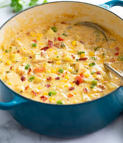

Chicken Corn Chowder

This in my opinon is the BEST soup besides real New England Clam Chowder. But when clams are expensive and may be hard to come by,
so the best option is this delicous Chicken Corn Chowder.
INGREDIENTS
- 1/2 cup butter
- 1 diced onion
- 1 diced carrot
- 1 minced garlic
- 1/2 cup flour
- 4 diced potatoes
- 2 cooked rotisserie chicken breats, shredded
- 3 cups corn kernels
- 4 cups chicken stock
- 2 1/2 cups half-n-half
- salt and pepper to taste
STEPS
- Over medium heat, melt butter in large saucepan. Stir in onions, carrots and garlic. Cook for 2 minutes
- Stir in flour, cook until light brown. Remove saucepan from heat.
- Stir together potatoes, chicken, corn and 3 cups of stock in large soup pot over medium heat.
- Whisk remaining 1 cup of stock into vegtables and flour. Then combine into soup pot, bring to simmer, cook until thick.
- Stir in half-n-half, salt and pepper. Bring to boil, reduce heat to low, simmer for 20 minutes.
- Serve!